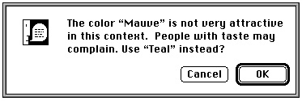
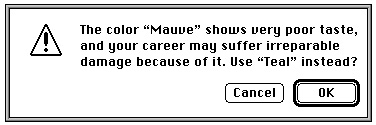
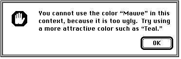

Legacy Document
Important: The information in this document is obsolete and should not be used for new development.
Important: The information in this document is obsolete and should not be used for new development.


Types of Alerts
Every user of every application is liable to do something that the application won't understand or can't cope with in a normal manner. Alerts give your application a way
to respond to these situations in a consistent manner. There are two major categories
of alerts: alert sounds and alert boxes.The system alert sound is a sound resource stored in the System file. This sound is played whenever system software or your application uses the Sound Manager procedure
SysBeep. The Sound control panel allows the user to select which sound
is played as the system alert sound. You can also provide your own alert sound to use
in place of the system alert sound.Use an alert sound for errors that are both minor and immediately obvious. For example, if the user tries to backspace past the left boundary of a text field, your application might play the alert sound instead of displaying an alert box. Your application can base its response on the number of consecutive times an alert condition recurs; the first time, your application might simply play a sound, and thereafter it might present an alert box. Your application can define different responses for each one of four alert stages.
An alert box is primarily a one-way communication from your application to the user; the only way the user can respond is by clicking buttons. Therefore, your alert boxes should contain buttons, but usually they should not contain editable text fields, radio buttons, or checkboxes--items that are typically displayed in dialog boxes.
There are three standard kinds of alert boxes: note alerts, caution alerts, and stop alerts. They are distinguished by the icons displayed in their upper-left corners.
Use a note alert to inform users of a situation that won't have any disastrous consequences if left as is. Usually this type of alert simply offers information, and the user responds by clicking the OK button. Occasionally, as shown in Figure 6-3, a note alert may ask a simple question and provide a choice of responses.

Use a caution alert to alert the user to an operation that may have undesirable results if it's allowed to continue. As shown in Figure 6-4, you should give the user the choice of whether to continue the action (by clicking the OK button) or to stop the action (by clicking the Cancel button).

Use a stop alert to inform the user that a problem or situation is so serious that the
action cannot be completed. Stop alerts, as illustrated in Figure 6-5, typically have only
a single button (OK), because all the user can do is acknowledge that the action cannot be completed.
You can also create custom alert boxes containing in the upper-left corners either your own icons or blank spaces. Plate 2 at the front of this book illustrates an alert box that
the SurfWriter application displays when the user chooses the About command from the Apple menu. After reading the information in this alert box, the user clicks the OK button to dismiss it.